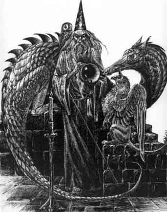

Nel mondo
fantastico di Arelia , le scoperte e le
nuove invenzioni sono rare e poco importanti, questo fa si che il mondo resti
con lo scorrere del tempo sempre allo stesso stadio di sviluppo tecnologico. La ratio
di tutto questo si spiega con la presenza della magia, la magia clericale (compreso
i poteri dei paladini) fa si che non si cerchi e si sperimenti nella medicina e
nella chimica organica e coloro che sono più evoluti in tali campi sono coloro
che hanno difficoltà a procurarsi magia del genere (come i pergariani). Inoltre
i maghi e gli oggetti magici compensano la tecnica le armi da guerra e
moltissimi altri campi (si può notare come coloro che in questi sono più
avanzati sono proprio i nani che non accettano la magia pur essendo una razza
intelligente).
In compenso
sono molto diffuse le scienze umanistiche, lo studio sulle
forme di governo, la filosofia e la teologia, e diffusi sono gli studi di
tipo classificatorio come botanica o zoologia.
Coloro che
sono più addentrati nello studio sono infatti proprio gli utenti di magia che
spendono gran parte della loro vita ad inventare nuovi incanti sempre più
versatili e capaci di fronteggiare l’evenienza desiderata, e così come nel
mondo reale effettuare una scoperta utile rende fama e onori, così su Arelia
scoprire un incantesimi o una ricetta per un oggetto utile, facile da utilizzare
e diffondere rende moltissimo.
E’ chiaro
quindi che in un mondo simile i maghi siano molto potenti e siano attenti a non
diffondere troppo il loro potere (quindi la loro conoscenza) per evitare perdite
di potere.
Per questo
motivo i maghi sono tutti (o quasi) riuniti in una specie di Corporazione
chiamata Il Circolo del Potere, che ha il compito di difendere i segreti della
magia. Il Circolo del Potere è diffuso su tutto il continente, ed è per così
dire una organizzazione internazionale, anzi sovranazionale. Il potere politico
di tutti gli stati ad eccezione del Granducato di Karsar, rispetta in pieno le
regole del Circolo, anzi si adopera attivamente a controllare il rispetto e
l’applicazione di tale regole (si pensi che nel Regno di Tarsis, il Re paga
una struttura di Ispettori del Magico, che sono suoi funzionari, unicamente per
controllare che nel suo Regno le regole del Circolo siano rispettate).
Inizialmente
il Circolo era una setta di potenti maghi che lottavano per ottenere il
controllo della magia su Arelia. Con il passare degli anni l’adesione a questo
gruppo di maghi sempre più famosi e l’eliminazione di quelli contrari fece si
che il Circolo divenisse sempre più famoso e potente.
L’attuale
Circle of Power, come organizzazione stabile e ordinata da regole precise e
scritte riconosciuta e rispettata praticamente da tutti, risale al solo 30 p.n..
In quel periodo si dovette affrontare il
problema della rivolta nell’Impero di Nordor, dato che nel Nordor molti maghi
non inseriti nelle organizzazioni politiche dell’Impero utilizzarono i loro
poteri nella guerra civile per scopi personali, fu valorizzata la tesi dei maghi
del Circolo su quanto fosse importante controllare a chi venisse insegnata la
magia e quali incanti si dovessero insegnare. Inoltre a seguito delle
devastazioni, sempre nel Nordor, molti laboratori, libri e oggetti magici
finirono nelle mani di esseri pericolosi e spregevoli.
Da quella
data il IIIII Trisia 30 p.n. venne proclamata la Costituzione
del Circolo del Potere, a cui aderirono tutte le principali scuole di
magia e associazioni di maghi di Arelia.
Nella
Costituzione venne anche stabilito che tutti coloro non avessero accettato e
rispettato le regole del Circolo del Potere sarebbero stati considerati Rinnegati e come tali ricercati e puniti dovunque fossero fuggiti.
Si badi
rinnegato non vuol dire cattivo o perfido o crudele rinnegato è
semplicemente colui che non accetta le regole e le limitazioni del Circle of
Power ma desidera apprendere e insegnare le proprie magie liberamente senza
alcun vincolo. Solo per questo è considerato un individuo destabilizzante e
pericoloso. Molto spesso, però, i rinnegati sono esseri spregevoli che vogliono
utilizzare la magia per i loro solo fini personali.
Significativa
è il commento alla Costituzione del Circolo del Potere
che si trova nei lavori preparatori alla stessa e che recita così :
“…per evitare dunque, che
tali immani ed arcani poteri
cadano nella mani di
persone indegne e pericolose che
sarebbero disposte ad utilizzarle senza scrupoli
contro i paesi civili e gli esseri delle forze del bene, è fondamentale
la creazione di tale strumento di
controllo sulla diffusione e l’insegnamento…”
L’obiettivo
primario del Circle of Power è proprio il controllo sulla
diffusione e sull’insegnamento (il
quale ultimo rappresenta del resto il vero unico strumento di diffusione)
Il Circolo del Potere rappresenta
l’assemblea delle più potenti organizzazioni di maghi di Arelia. all’inizio era proprio una
questione di potenza individuale, oggi invece (dopo la riforma del 30 p.n.) è
un problema di potere e influenza “politica”, entrano cioè al Circle of
Power maghi che comandano accademie o organizzazioni di magia, mentre restano
esclusi potenti maghi che sono solo forti individualmente (per tale motivo un
potentissimo rinnegato come Moolt ne è escluso, anzi proprio perché ne è
stato escluso, è divenuto rinnegato), alcune volte però tali maghi sono
osservatori onorari e partecipano con diritto alla parola alle riunioni
dell’assemblea, ma senza poter decidere e contrattare sulle questioni (ciò
non togliere possano persuadere).
Costoro
hanno il diritto di assistere a tutte le riunioni del Circle of Power e sono
eletti a vita dallo stesso circolo.
Fanno parte
del Circle of Power quindi non persone ma associazioni, attualmente ne sono
membri :
L’Accademia
dei Nove Saggi di Tarsis
La Scuola
delle Illusioni dei Cirs
L’Accademia
Fellstar di Artas
La Scuola delle Fiamme Purificatrici di Sinkros
L’Antica
Scuola di Manipolazione Magica Nordoriana
Il Circolo
dei Summoner di Pergar
Le Tre Torri
della Divinazione Silveriane
L’Organizzazione
Suprema dei Necromanti
L’Istituto
di Cooperazione di Alta Magia Elfica
Si badi che
questi non sono gli unici che possono insegnare gli spells, ma decidono di fatto
su chi e cosa possa insegnare e creare, anche autolimitandosi vicendevolmente.
Nelle riunioni questi gruppi possono farsi rappresentare da chi vogliono ma per
le votazioni esprimono tutti un unico voto. Le decisioni sono prese a
maggioranza assoluta. Il Circle of Power non ha alcuna sede ma si riunisce una
volta a testa nelle sedi di questi gruppi (chi ospita presiede anche
l’assemblea), su richiesta di uno di tali gruppi di maghi.
Le riunioni
oggi giorno sono poche e spesso non vertono su questioni veramente rilevanti
perché la spartizione dei campi di insegnamento e dei quantitativi di
produzione di oggetti magici è avvenuta tra il 30 p.n. e il
50 p.n..
I temi ora
attuali sono :
Concedere
deroghe individuali e permessi per l’insegnamento o l’apprendimento.
Riconoscere
nuove associazioni o scuole di insegnamento.
Dichiarare
soggetti rinnegati.
Scambi di
singoli incantesimi.
Bandire o
permettere l’utilizzo e/o l’insegnamento di incantesimi particolari.
Riconoscimento
di nuovi incantesimi e accettazione del loro insegnamento.
Quindi oggi
ognuno dei seguenti gruppi ha
detiene la possibilità di insegnare la maggioranza di incantesimi in alcune scuole e protegge
questo suo primato, esaminiamo ora questi gruppi singolarmente:
Sede
principale : Città di Tarsis
L'Accademia dei Nove Saggi è l'unica scuola ufficiale di magia del Regno di Tarsis. Si tratta di una grande accademia conosciuta in tutta Arelia. La posizione strategica del Regno di Tarsis, a diretto contatto con l'ormai devastato Impero del Nordor di cui costituisce il confine sud, ha reso questo Stato di vitale importanza per tutto il Sud-Arelia.
Sede
principale : Monti Cirs, Tempio delle Illusioni
In tutta
Arelia i soli detentori dei veri poteri delle illusioni sono gli Gnomi dei monti
Cirs. In ogni villaggio di tali monti vi è un Grande Maestro delle Illusioni
con i suoi adepti e i suoi insegnamenti particolari. Le accademie di magia e
quindi il Circle of Power riconoscono la Scuola delle Illusioni dei Cirs (che
in effetti non esiste ma sarebbe costituita dai vari guru dei villaggi) Ogni
comunità di gnomi può avere i suoi illusionisti ma solo il più esperto (e a
parità di esperienza il più anziano) sarà il Grande Maestro delle illusioni
. Il più esperto (e a parità di esperienza il più anziano) dei Maestri
sarà il Sommo Maestro delle illusioni che dirige l’assemblea vota come se fosse due Maestri, inoltre costui partecipa al
Circle of Power ove rappresenta la magia degli Gnomi. Poiché i loro sforzi si
sono sempre concetrati nel campo delle illusioni hanno compensato con lo scambio
con gli umani degli spells della scuola Divination, ma specialmente con gli elfi
per gli spells della scuola di incantamento di cui conoscono molte magie e il
metodo di ricerca.
L’Istituto di Arti Evocative di Artas
Sede
principale : Città di Artas
La più
grande per numero di iscritti e per estensione delle strutture, con laboratori
in tutto il Granducato di Trisengar. I loro studi sono estremamente vari anche
se non molto specializzate in nessuna singola scuola di magia. Decide per questa
il Concilio dei Maestri formato da tutti i maghi di tale accademia che
raggiungono il nono livello.
Sede
principale : Città di Sinkros
Fondata dal
potente Wimbly è una piccola scuola con unica sede a Sinkros. E’ il fiore
all’occhiello del Circolo del Potere. Sebbene di modestissime dimensioni,
infatti, è all’avanguardia nel laboratori e nelle librerie. Fornisce servizi
anche per maghi di alto livello e mantiene il segreto di incantesimi di potere
molto elevato. E’ però la più costosa fra le scuole di magia areliane.
Evocation (
Fire )
Sede
principale : Città di Ranassance (filiali: Little Forest, Ravengrad)
Questa
scuola è stata fondata dai maghi alteratori del Nordor scesi dopo il crollo
dell’Impero, i loro studi seguono la tradizionale impronta dell’alterazione
che era l’unica vera scuola studiata nell’Impero Nordor. Il più potente fra
i maghi della scuola prende il nome di Conservatore delle tradizioni magiche del
Nordor ed è il rappresentante presso il Circle of Power. E’ stata mantenuta
anche la tradizionale separazione fra le sei partizioni di studi della magia
dell’alterazione a capo di ognuna delle quali si trova un Maestro
dell’Alterazione.
Alteration
Sede
principale : Città di Pergar, Torre di Klist
Grande
scuola per potere e per iscritti. Costoro sono convinti di essere molto potenti (come
effettivamente spesso sono) e credono che la vera magia sia solo quella dei
Conjurers e dei Summoners. Si dividono quindi in Conjurer, che sono i meno
fanatici e i più versatili, nonché numerosi, e in Summoner, più fanatici e
settari, ma molto potenti. Vestono tuniche rosse (i summoner si distinguono da
strisce nere sulle braccia e da simboli runici sempre neri sulla tunica. Per
questo motivo sono anche chiamati Le Vesti Rosse della magia. Per quel che
riguarda gli allievi i Conjurer superano il centinaio mentre i Summoner a stento
la quarantina. Il comando spetta ai tre Sublimi Conjurer, o Summoner,
Detentori del Gran Potere della Magia .
Questa accademia non effettua scambi con le altre da moltissimo tempo. E’
inoltre sottoposta a regole particolari nel Circle of Power, ha cioè una
maggiore autonomia pochi limiti e controlli, in compenso ha accettato di restare
nel Circle of Power. Questo comporta che per esempio, non considera rinnegati
alcuni che invece sono tali perché condannati dal Circle of Power (come il
potente Moolt e i suoi adepti che
infatti vive a Pergar). Questo fa si anche che, non si opponga agli scambi fra
le altre scuole. Voci certe riferiscono che costoro hanno scambi con la magia
degli Elfi Scuri (basati sull’elettricità e anche alcuni della necromanzia)
Sede
principale : Città di Silveria
Si tratta
della più nuova delle scuole, fondata dall’idea del Maestro Indaral del Cigno
d’Argento, è stata costruita ed ampliata per mezzo dei fondi del Circolo del
Potere. E’ devoluta unicamente allo studio e alla diffusione della divinazione.
Il Circolo ha deciso di utilizzarla per le sue esigenze di controllo e di
ispezione su maghi areliani. Per questo motivo è divenuta molto importante in
breve tempo e ha acquisito il diritto di voto in sede al Circolo del Potere.
Divination
Sede
principale : Non definita
Fanno parte
di questo piccolo gruppo maghi che hanno deciso di studiare gli effetti della
morte e della vita e soprattutto delle fasi di passaggio tra questi due stati di
vita. Non hanno sede o scuola a parte per il Necromantic Istitut che è
un laboratorio sui Roam dove ve ne sono molti riuniti. Per il resto sono singoli
maghi al cui elenco sicuro ha accesso solo il Circle of Power. Costoro però
soro riuniti in questa organizzazione che li rappresenta e porta innanzi le loro
pretese al Circle of Power e cura i le loro pubbliche relazioni, vi è un loro
rappresentante che è l’unico necromante conosciuto da chiunque. Hanno tale
segretezza per difendersi da coloro non capiscono realmente la magia e credono
che compiono cose proibite dagli dei (molti chierici, governanti, gente comune e
così via, alcune volte si trovano fra gli altri maghi e operano in accademie
senza che nessuno sappia che realmente sono Necromanti).
Sede
principale : Foreste Loderin ed Erlin
In realtà l'Istituto non è una vera scuola ma è l'ente generale di controllo che gli elfi hanno creato per lo studio della magia. Gli elfi infatti hanno sviluppato per primi la magia del nuovo metodo e grazie agli studi dei gray elves hanno istituito più scuole di magie specializzate in diversi campi di insegnamento. L'Istituto è l'ente che supervisiona in generale l'operato delle scuole elfiche e che intrattiene i rapporti con il Circle of Power. All'Istituto fanno capo le quattro grandi scuole di magia elfiche :
Circoli Protettivi Erlin (Abjuration)
La Torre Incantata (Enchatment)
Scuola Elfica della Seduzione (Charm)
Accademia della Fonte Magica (Evocation - Water)
Questo fa si che gli elfi siano molto potenti in molti campi, dato che hanno scambiato molto anche con gli gnomi Illusionisti. L’istituto si occupa quindi di rappresentare la magia elfica fuori i confini della foresta Erlin e Loderin.
I Maestri del Circolo del Potere
Regole
del Circolo per lo sviluppo della magia e dello studio
Qualsiasi
studio sulla magia è patrimonio di tutti gli esseri viventi. Il circolo
incentiva i maghi allo studio e alla realizzazione di testi sulla magia.
Per questo motivo chi scrive un qualsiasi libro sulla magia può utilizzarlo
personalmente e venderlo al Circle of Power (a meno che non lo doni a una
accademia per requisito). Per essere ritenuto valido un testo deve essere di
almeno 200 pagine e risultare scritto con adeguata dovizia. A questo punto verrà ricompensato dal Circolo che
premierà l’autore con una somma prestabilita uguale a :
|
Libro
per inventare spell generici |
600
corone |
792
karsi o dischi |
690
querce |
|
Libro
specializzato generico |
700
corone |
924
karsi o dischi |
805
querce |
|
Libro
specializzato specifico di scuola |
800
corone |
1056
karsi o dischi |
920
querce |
|
Libro
per costruire oggetti generale |
480
corone |
653
karsi o dischi |
552
querce |
|
Libro per costruire oggetti specifici |
600
corone |
792
karsi o dischi |
690
querce |
|
Libro
per pozioni generale |
500
corone |
660
karsi o dischi |
575
querce |
Lo
scrittore dovrà scrivere il libro a proprie spese e portarlo presso una
qualsiasi accademia
faccia parte del Circolo del Potere. In tale sede il volume sarà analizzato ed
una relazione sulla presentazione dello stesso sarà effettuata durante una riunione
del Circle of Power. In un periodo di 1-2 mesi lo studioso riceverà il premio
con l’aggiunta di 5 corone (6,5 karsi o 5,75 querce) per livello di potere che
è certificato abbia raggiunto moltiplicato per quello precedente (minimo 1, per
esempio al 6° livello riceverà in più 150 corone = 6 x 5) fino ad un massimo di
360 corone supplementari al 9° livello di esperienza. Lo studioso rinunzierà
però a speculare su quello che è considerato patrimonio comune areliano. Se il
libro è particolarmente innovativo verrà copiato a spese del circolo e
distribuito nelle accademie e allo studioso verrà consegnato in cerimonia
ufficiale titolo di merito e premio di 300 corone (400 karsi, 345 querce)
supplementari.
Costi medi per la produzione di un libro valido per il Circolo del Potere (in
zone di comune produzione e reperimento di libri ed inchiostri):
Penna d'oca con punta in argento: Peso 1/10 libbra, Costo 5 monete d'oro.
Fiala d'inchiostro per scrivere 50 pagine: Peso 1 libbra, Costo 15 monete d'oro.
Volume vuoto in carta da 200 pagine con
In alternativa il mago può utilizzare libri in pergamena, in tal caso
Volume vuoto in pergamena da 100 pagine
La
Costituzione del Circle of Power
Qualunque
mago su Arelia non rispetti una qualunque di queste regole sarà dichiarato dal
Circolo del Potere, mago rinnegato.
Regole
per i singoli maghi :
Tutti
coloro vogliano imparare la magia possono farlo unicamente presso un Maestro o
una Scuola accreditata dal Circle of Power.
Tutti i
maghi che hanno studiato la magia devono rispettare le regole che sono per loro
dettate da colui che li ha istruiti o dalla scuola dove si sono iscritti per
imparare le arti magiche.
Tutti gli
iscritti a una scuola si impegnano a rispettare le leggi fissate dalla statuto
della stessa fino a quando non decidono di allontanarsi dalla stessa. Per poter
ritenersi liberati dalla scuola stessa occorre però un riconoscimento dello
stesso Circle of Power che verrà dato o meno valutando la condotta del singolo
mago e le sue future ambizioni, fino a che non ottengono tale riconoscimento
devono continuare a rispettare le regole della propria scuola anche se
formalmente non risultano presso quella scuola iscritti.
Tutti i
maghi hanno il dovere di imparare la magia unicamente secondo le regole che gli
competono secondo la scuola dove sono iscritti o quelle che sono dettate dal
proprio maestro. Mai può un mago essere completamente libero di imparare la magia, a seguito di un riconoscimento di libertà del Circle of Power avrà il
diritto di iscriversi presso qualsiasi scuola o maestro lo accetterà ma non di
imparare la magia senza regole.
Qualsiasi
mago ha diritto di imparare senza alcuna restrizione qualsiasi incantesimo
scopra con il metodo di ricerca e sperimentazione, essendo questo sistema basato
esclusivamente sulle sue forze. Il Circle of Power non ostacolerà nessuno
voglia intraprendere una siffatta ricerca con i propri mezzi qualsiasi
incantesimo voglia scoprire. Il lavoro di ricerca deve essere però compiuto in
laboratori e con librerie regolari e che non siano illecitamente utilizzate o
possedute.
Il libro
di magia di ogni mago è di proprietà dello stesso mago e qualora un mago trovi
un libro di magie di qualcun altro è tenuto a consegnarlo alla propria scuola o
maestro che lo consegnerà a sua volta al Circle of Power che lo restituirà al
proprietario o lo archivierà e conserverà. Tutti i libri di magia sono
registrati presso il Circle of Power e tutti i maghi hanno il dovere di
dichiarane il contenuto integrale. Il Circle of Power ha il diritto con le
proprie ramificazioni di controllarne il contenuto di volta in volta.
Qualora
un mago addestri un suo collega al passaggio di livello successivo deve
preventivamente chiedere autorizzazione al Circolo del Potere. E’
assolutamente proibito addestrare un mago considerato rinnegato. Perché un mago
possa essere addestrato al 5° livello di esperienza occorre che lo stesso si
sottoponga a un controllo magico generale presso le Tre Torri di Divinazione
Silveriane, al costo politico di 500 dischi, che ne attesti l’idoneità e la
fedeltà alle regole del Circolo. Nessuno potrà addestrare un mago privo di
tale attestato.
Tutti i
maghi devono sempre indossare la tunica stabilita dalla loro scuola per il loro
grado e devono farsi identificare come tali da tutti gli altri maghi e le
autorità politiche delle zone civilizzate. Possono non portare la tunica
esclusivamente in zone inesplorate e non civilizzate salvo farsi immediatamente
riconoscere da autorità e altri maghi del Circolo che in loco incontrassero. Il
riconoscimento deve avvenire sempre prima del lancio di qualsiasi incantesimo.
I maghi
non iscritti a nessuna scuola devono indossare una tunica verde scuro con i
seguenti drappi sulle spalle a seconda del livello di potere raggiunto, 1° e 2°
drappo viola, 3° e 4° drappo rosso, 5° e 6° drappo d’argento, 7° o
maggiore drappo d’oro.
I Maestri
di Magia del Circolo possono indossare le vesti che desiderino ma devono sempre
portare l’Anello
del Magistero ottenuto dal Circolo.
Tutti i
maghi hanno il dovere una volta individuato un rinnegato di catturarlo renderlo
inoffensivo e portarlo presso un Maestro di Magia del Circolo per consegnarlo,
con tutti gli oggetti magici da lui ritrovati e i libri di magie. Qualora un
mago abbia il semplice sospetto che un altro mago sia rinnegato deve comunicarlo
immediatamente a un Maestro di Magia del Circolo.
Tutti i
Maghi del Circolo devono sottostare al controllo sulla magia che presso di loro
può effettuare qualsiasi Maestro di Magia del Circolo o chi da lui delegato.
Ogni Maestro di Magia del Circolo può fare esaminare e fare controllare la
fedeltà al Circolo di qualsiasi mago del Circolo stesso. Solo con una decisione
del Circolo del Potere è possibile effettuare un controllo su un Maestro del
Circolo.
I Maestri
di Magia del Circolo hanno il dovere e tutti i poteri per fare rispettare le
regole del Circolo del Potere dovunque essi si trovino, costoro possono chiedere
che un mago sia dichiarato ufficialmente rinnegato.
Coloro
siano arrivati alla carica più alta di una della accademie di magia
riconosciute con diritto di voto dal Circolo di Potere si considerano
automaticamente Maestri di Magia del Circolo.
Tutti i
maghi che hanno un proprio laboratorio funzionante e che hanno raggiunto almeno
il 9° livello di esperienza possono chiedere al Circle of Power la
dichiarazione per essere nominati Maestri
di Magia del Circolo. La richiesta di tale autorizzazione sarà effettuata
presso le Tre Torri di Divinazione Silveriane dove il mago stesso si sottoporrà
a un controllo magico generale che ne attesterà l’idoneità e la fedeltà
alle regole del Circolo. Il costo della richiesta è di 10000 dischi. La prova
magica di controllo ha una validità pari a tre anni nei quali il mago potrà
chiedere di essere nominato Maestro.
In base a
un controllo con esito positivo la sua nomina sarà posta ai voti in una
sessione del Circolo. Il Circolo potrà nominare solo un nuovo Maestro ogni anno.
Un mago nominato Maestro potrà insegnare a coloro saranno riconosciuti suoi
allievi la magia, secondo le regole che il Circle of Power ha dettato per loro.
In tale
dichiarazione di nomina sarà contenuto il numero massimo di allievi a cui il
mago può insegnare, la competenza territoriale da cui potrà attingere allievi
e le zone ove potrà costruire laboratori e centri di ricerca. Un Maestro ogni
anno può chiedere che venga votata una modifica delle condizioni di nomina. Il
Circolo può revocare la nomina in ogni
momento per irregolarità del comportamento del mago. Si deve tenere presente
che non si può insegnare a iscritti presso altri istituti o allievi di altri
maestri che non si siano fatti liberare dal Circle of Power se non secondo le
direttive e le regole a loro imposte dal maestro o dalla scuola.
Diritti e i doveri del maestro, questi possono di volta in volta variare caso per caso, ma devono in ogni caso contenere queste disposizioni minime e inderogabili :
Il Maestro ha sempre il diritto di rinnegare un proprio allievo che sia ancora sotto la sua potestà. In tale caso l’allievo sarà rinnegato senza che occorra una decisione del Circolo del Potere.
Il Maestro ha diritto di farsi pagare ma dovrà fissare in anticipo i prezzi dei propri insegnamenti e sottoporli al controllo del Circle of Power, i prezzi devono essere gli stessi per tutti gli allievi.
Una volta accettato un allievo il Maesto deve rispettare i suoi diritti e non può espellerlo, può però chiedere al Circle of Power un permesso per farlo dichiarare libero dal suo insegnamento.
Il Maestro ha l’onere di versare il 25 % dei guadagni degli allievi a pagamento al Circolo.
Diritti e i doveri degli allievi, questi possono di volta in volta variare caso per caso, ma devono in ogni caso contenere queste disposizioni minime e inderogabili :
Gli allievi hanno l’obbligo di pagare per gli insegnamenti che il Maestro fornisce loro.
Gli allievi devono seguire le istruzioni del Maestro, giurare fedeltà e segretezza al Maestro, e hanno il dovere di lavorare e studiare secondo le direttive del Maestro.
L’allievo che paga ha diritto a ricevere gli insegnamenti comprati e il maestro a darli come stabilito, l’allievo che collabora ha il diritto di ricevere insegnamenti ed essere messo in grado di studiare, ha diritto a ricevere il training entro tre mesi dalla richiesta, e ha diritto di studiare fino a due incantesimi all’anno dei quali uno è a scelta dell’allievo, l’allievo ha diritto ad avere almeno 3 mesi l’anno liberi per se stesso.
Il Maestro che non rispetti queste regole potrà essere denunziato presso il Circolo e perdere il titolo.
Si può sempre successivamente chiedere la revoca o la modifcia di tale dichiarazione al Circle of Power il quale può anche revocarla o modificarla di sua iniziativa.
Quando un
mago costruisce un nuovo oggetto magico deve dichiararlo presso il Circle of
Power e deve rispettare le regole per l’acquisto e la vendita degli oggetti
magici che sono per lui stabilite. Sarà comunque di sua propietà l’oggetto
costruito con i suoi soli mezzi e il Circle of Power non si potrà opporre a che
il mago lo possegga e lo utilizzi personalmente, potrà invece opporsi al suo
prestito donazione o vendita.
Regole
per le Accademie e le Scuole riconosciute dal Circle of Power :
Requisito
per aversi una Accademia di Magia è che decidano di dedicarsi
all’insegnamento, con una organizzazione comune, almeno due Maestri di Magia
del Circolo del Potere. Anche uno solo Maestro di Magia del Circolo del Potere
potrà creare una Accademia purché sia coadiuvato da almeno un altro mago che
abbia accesso al 4° livello di potere e altri due maghi che abbiano accesso al
3° livello di potere di incantesimi. Si dovrà stilare uno Statuto
dell’Accademia che fissi le
regole e le modalità di insegnamento, i doveri e gli oneri degli allievi, i
gradi interni e le gerarchie e i doveri di comportamento degli allievi. Nello
stilare lo Statuto si dovranno rispettare a pieno le volontà e gli interessi
del Circolo del Potere.
Le
Accademie non hanno un numero massimo definito di allievi.
Qualora
si voglia costituire una Accademia di magia si deve presentare il progetto e lo
Statuto presso il Circolo del Potere che con decisione a maggioranza assoluta
dei suoi componenti dovrà accettarlo, modificare i punti dello statuto se
necessario e decidere quali incanti si possano insegnare nella scuola.
Le scuole
si dividono in quelle che hanno diritto di voto al Circle of Power e quelle che
non lo hanno. Perché una scuola già costituita sia ammessa al diritto di voto,
occorre che questa sia accettata al gradino supremo del Circolo da un voto
unanime dei componenti il Circle of Power.
Ogni
scuola detta le regole scirtte per i propri iscritti che sono tenuti a
rispettarle fino a che non siano riconosciuti liberi da vincoli con la scuola
dallo stesso Circle of Power.
Le scuole
si impegnano a rispettare tutte le decisioni del Circle of Power e di inviare un
rappresentante allo stesso per dimostrare il loro volere.
Le scuole
si impegnao a formare delle regole uguali per tutti i maghi da loro iscritti e
non discirminare nessuno abbiano precedentemente accettato salvo la possibilità
di richiesta di liberazione che possono avanzare sempre al Circle of Power.
I vertici
delle scuole, secondo le regole sancite nel loro statuto, possono dichiarare
automaticamente rinnegato un allievo da loro iscritto, senza bisogna che voti il
Circolo del Potere.
Il
costo di una singola prestazione magica si ottiene mediante questa operazione
matematica :
7 corone (10 karsi) x (livello di potere x livello di potere precedente, ma minimo 1) x (grado di difficoltà) + costo componenti.
Inoltre se l’incantesimo è lanciato oltre il livello minimo necessario al mago per lanciare lo spell stesso (ossia il livello a cui accede a quel livello di potere) si paga un prezzo aggiuntivo pari a livello di lancio moltiplicato per livello precedente in corone. Ma l'acquirente può sempre scegliere il livello di lancio a cui vuole la magia sia lanciata.
COSTO DELLA PROFESSIONALITA'
|
GradO |
2° |
3° |
4° |
5° |
6° |
7° |
8° |
9° |
10° LIVELLO |
|
Corone |
2 | 6 | 12 | 20 | 30 | 42 | 56 | 72 | 90 |
|
Karsi |
3 | 8 | 16 | 27 | 40 | 56 | 74 | 95 | 119 |
Ad esempio un personaggio vuole che gli sia lanciata la magia Mending (1° livello di alterazione, 1° grado) che ha un costo base ( al 1° livello di lancio perché un mago ha la potenzialità per lanciarla al primo livello di esperienza) pari a 7 corone, il personaggio però chiede che sia lanciato come da un mago del 4° livello dovendo quindi pagare un prezzo superiore pari a 12 corone ( 4 per 3 ) per un totale di 19 corone + il costo dei componenti materiali.
Questa regola vale solo per gli incantesimi che non rientrano in una speciale categoria per la quale è stabilito un prezzo politico che deve essere obbligatoriamente applicato come tale indipendentemente dal livello di lancio e dal componente utilizzato e per incantesimi che hanno come componente un componente materiale che non è acquistabile, anche a prezzi elevati, sul mercato (come la perdita di un anno di vita).
L’applicazione della formula da luogo a tale tabella alla quale va aggiunto in ogni caso il livello a cui lo spell è lanciato.
COSTO
IN CORONE
|
GradO |
I |
II |
III |
IV |
V |
VI |
VII LIVELLO |
VIII LIVELLO |
IX LIVELLO |
|
1° |
7 |
14 |
42 |
84 |
140 |
210 |
294 |
392 |
504 |
|
2° |
14 |
28 |
84 |
168 |
280 |
420 |
588 |
784 |
1008 |
|
3° |
21 |
42 |
126 |
252 |
420 |
630 |
882 |
1176 |
1512 |
|
4° |
28 |
56 |
168 |
336 |
560 |
840 |
1176 |
1568 |
2016 |
|
GradO |
I |
II |
III |
IV |
V |
VI |
VII LIVELLO |
VIII LIVELLO |
IX LIVELLO |
|
1° |
10 |
20 |
60 |
120 |
200 |
300 |
420 |
560 |
720 |
|
2° |
20 |
40 |
120 |
240 |
400 |
600 |
840 |
1120 |
1440 |
|
3° |
30 |
60 |
180 |
360 |
600 |
900 |
1260 |
1680 |
2160 |
|
4° |
40 |
80 |
240 |
480 |
800 |
1200 |
1680 |
2240 |
2880 |
COSTO IN QUERCE
|
GradO |
I
LIVELLO
|
II
LIVELLO
|
III
LIVELLO
|
IV
LIVELLO
|
V
LIVELLO
|
VI
LIVELLO
|
VII
LIVELLO
|
VIII
LIVELLO
|
IX
LIVELLO
|
|
1° |
8
|
16
|
48
|
96
|
161
|
241 |
338 |
450 |
579 |
|
2° |
16 |
32
|
96
|
193
|
322 |
483
|
676 |
901 |
1159
|
|
3° |
24
|
48 |
144
|
289
|
483 |
724 |
1014 |
1352 |
1738
|
|
4° |
32
|
64 |
193
|
386 |
644 |
966 |
1352
|
1803 |
2318
|
INCANTESIMI ARELIANI A COSTO SPECIALE
Identify: Poiché questa magia impegna un'intera giornata lavorativa del mago, al costo dell'incantesimo deve aggiungersi un costo per l'impegno del mago che lo lancia che è stato stabilito in relazione al livello di lancio della magia stessa (questa cifra dovrà essere sommata al costo della magia, alla professionalità del mago ed al costo del componente materiale):
|
I
LIVELLO
|
II
LIVELLO
|
III
LIVELLO
|
IV
LIVELLO
|
V
LIVELLO
|
VI
LIVELLO
|
VII
LIVELLO
|
VIII
LIVELLO
|
IX
LIVELLO
|
|
1
|
3
|
5
|
7 |
10 |
17 |
30 |
40 |
70 |
I rischi di una scorretta identificazione sono a carico del possessore dell'oggetto. L'esito dell'identificazione è riportato per iscritto (come una perizia) su un documento che è consegnato al possessore.
Si noti che per poter commerciare e possedere legalmente un oggetto magico è quasi sempre richiesto che si abbia questa documento di identificazione che abbia dato un risultato positivo. Le accademie e le persone più avvedute prima di acquistare un oggetto lo sottopongono a loro spese a una nuova identificazione, se in tal caso si scopre che la prima identificazione era erronea il possessore è tenuto al pagamento della nuova identificazione.